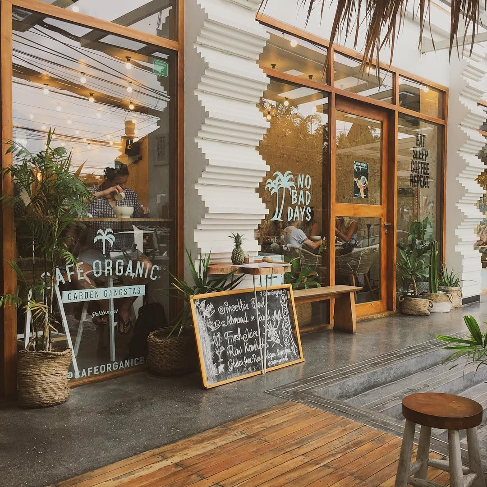

ABOUT THE CAFE
cafe ini saya dirikan karena saya suka sekali dengan kopi" murni oleh karena itu saya membuat cafe ini agar jika saya mengkonsumsi kopi tidak perlu beli di cafe" lain cukup hanya di cafe sendiri saja bisa untuk menikmati kopi apapun itu, dan juga saya melihat banyak peluang karena anak muda sekarang sangta suka nongkorng d cafe biar kelihatan star boys.

Opening hours: everyday from 08.00 - 24.00.
Address: jalan. megawati pancoran perak papua selatan
DIMANA ANDA BISA MENEMUKAN KAMI
Kami sudah menyediakan alamat yang sangat jelas di atas untuk cabang" yang lainnya banyak seperti ada di surabaya,kalimantan,malang,semarang,sidoarjo,jaksel,jakbar,jakpus.
FYI! Kami sangat senang jika anda berkunjung ke cafe kami,kami akan melayani dengan ramah,senyum,sopan santun. adapun karyawan" yang servisnya tidak menyenangkan di anda harap lapor pada email kami di bawah .
Reserve Isi table d bawah untuk memesan makanan ataupun minumal dengan dine in ataupun take away